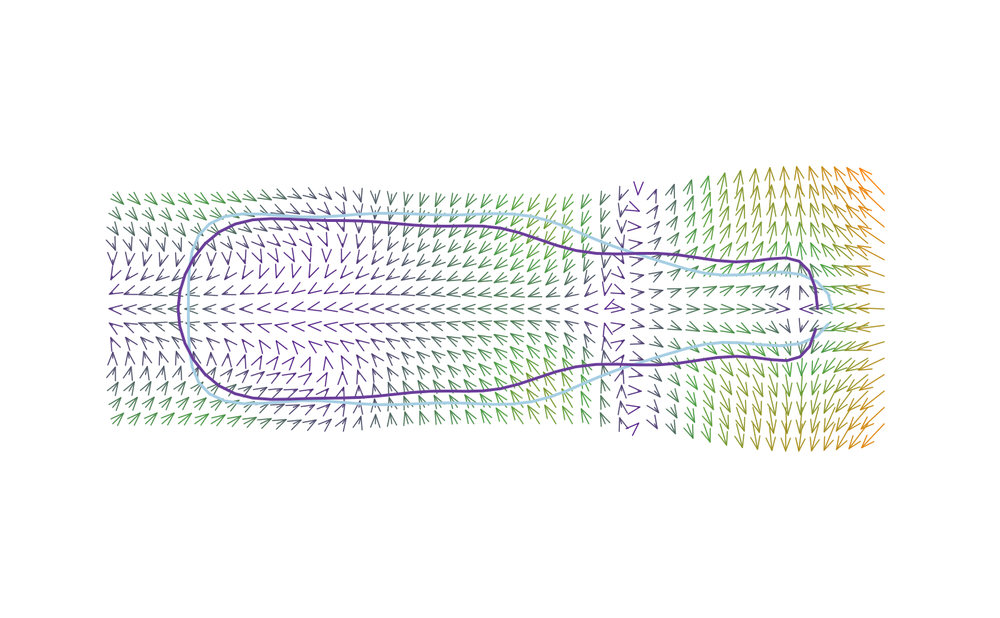

tps_arr(ows) calculates deformations between two configurations and
illustrate them using arrows.
tps_arr( fr, to, amp = 1, grid = TRUE, over = 1.2, palette = col_summer, arr.nb = 200, arr.levels = 100, arr.len = 0.1, arr.ang = 20, arr.lwd = 0.75, arr.col = "grey50", poly = TRUE, shp = TRUE, shp.col = rep(NA, 2), shp.border = col_qual(2), shp.lwd = c(2, 2), shp.lty = c(1, 1), legend = TRUE, legend.text, ... )
| fr | the reference \((x; y)\) coordinates |
|---|---|
| to | the target \((x; y)\) coordinates |
| amp | an amplification factor of differences between |
| grid | whether to calculate and plot changes across the graphical window
|
| over |
|
| palette | a color palette such those included in Momocs or produced with colorRampPalette |
| arr.nb |
|
| arr.levels |
|
| arr.len |
|
| arr.ang |
|
| arr.lwd |
|
| arr.col | if |
| poly | whether to draw polygons (for outlines) or points (for landmarks) |
| shp |
|
| shp.col | two colors for filling the shapes |
| shp.border | two colors for drawing the borders |
| shp.lwd | two |
| shp.lty | two |
| legend | logical whether to plot a legend |
| legend.text | some text for the legend |
| ... | additional arguments to feed coo_draw |
Nothing.
#>#>x <- MSHAPES(botF, 'type', nb.pts=80)$shp fr <- x$beer to <- x$whisky tps_arr(fr, to, arr.nb=200, palette=col_sari, amp=3)tps_arr(fr, to, arr.nb=200, palette=col_sari, amp=3, grid=FALSE)